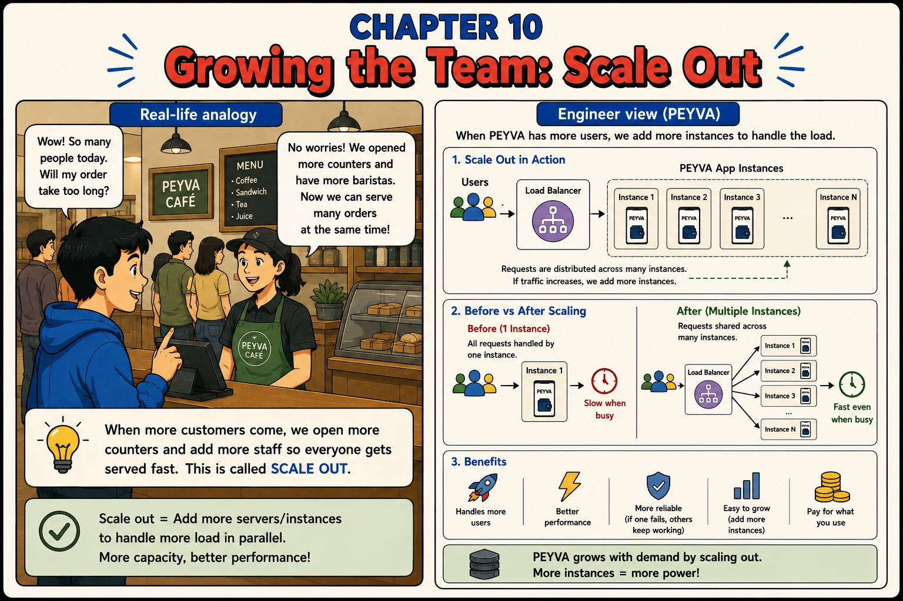
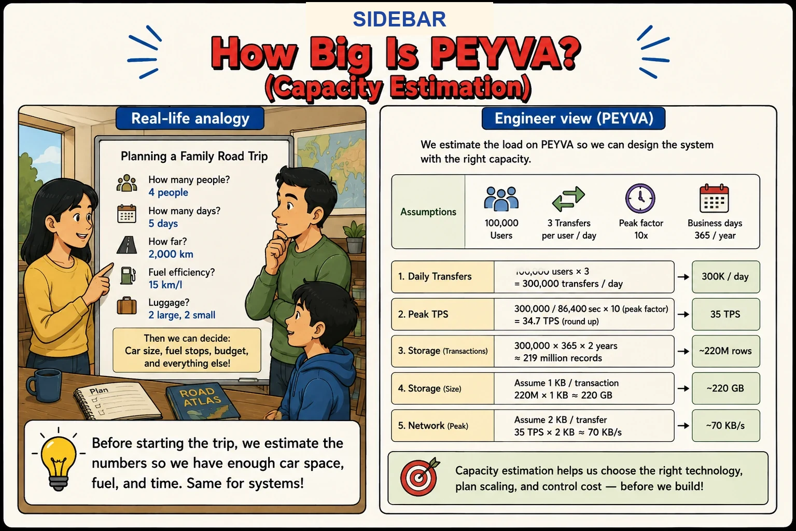

Chapter 10
Growing the Team: Scale Out
When more customers come, we open more counters and add more staff so everyone gets served fast.

1. What
- Instance. One running copy of the part of peyva that holds nothing of its own. Also just called a copy.
- Load Balancer. Sits in front of the copies and spreads requests across them. It holds the port the outside world knows.
- Stateless. Keeps no data of its own, so any copy can answer any request. The data lives in the Vault.
- Horizontal Scaling. Adding more copies to handle more load, instead of buying one bigger machine.
- Capacity Estimate. How many users, how often they act, how much busier the peak is, how big a record is. Multiply out, and you know what fills up first.
2. Why
- Copies are only swappable if none of them holds something the others lack.
- A database file inside each copy is three banks with three sets of balances. So the Vault becomes a program of its own.
- A transaction cannot stretch across two programs. The whole payment now runs inside the Vault, and the Teller makes one call.
- More copies help with reading requests and waiting around. They do not make writing faster: every payment still ends at one Vault.
- The load balancer now holds the port everyone knows. A copy dying mid-request looks to it like a timeout.
- Whether any of this is needed is arithmetic. The sidebar below does it.
Sidebar: How Big Is PEYVA? (Capacity Estimation) Sidebar

- An estimate is a few guesses multiplied out: how many users, how often, how much busier the peak is, how big a record is.
- 100,000 users at three payments a day is 300,000 a day: about 3.5 a second, 35 at a ten times peak.
- At a kilobyte a payment, two years of Ledger is around 220 GB.
- Size for the peak, not the average. The busiest hour is the one that matters.
- Roughly right before you build beats exactly right afterwards. Know which guess moves the answer most.
Self-Ask. Hidden guesses become a written list of assumptions you can argue with.
Documented in The Prompt Report: Zero-Shot, Self-Ask
1 of 2 Think~93 tokens
I need to size a payments system. One process today, and no idea what it needs to survive. No numbers yet. Write out the questions the estimate depends on. Answer each with a stated guess, and label where it came from: industry norm, your guess, or arithmetic. Done when I have your questions and a labelled answer to each.
2 of 2 Think~127 tokens
You listed the questions a capacity estimate depends on, and answered each with a labelled guess. Work out payments per second at peak, Ledger growth over two years, and network traffic at peak. Show each sum with the numbers filled in. Then: which guess moves the answer most, what happens if it is off by double, and which one you most want me to confirm. Done when I have a peak figure and a two-year storage figure, and know which guess to revisit first.
3. How Hands-on Building in Go, change in Chapter 0
Two choices first: the language you are building in, and the system you are on. Make them in Chapter 0. The prompts below stay locked until you do.
Written for Windows, in PowerShell, change in Chapter 0
Step-Back Prompting. Reasoning down from what makes any service replaceable beats reasoning up from code that was never going to scale.
Documented in The Prompt Report: Thought Generation, Step-Back Prompting
Every prompt below is copied with these rules, about 603 tokens for the chapter
Build this in Go, standard library only.
Code in peyva/<component>/, one folder per component.
Money: exact decimal or integer minor units, never floating point, two decimal places.
The goal and invariants are in peyva/goal.md.
The goal and invariants are in peyva/goal.md.
1 of 2 Think~120 tokens
I have a service handling payments, and I want several copies of it behind a router. Without looking at code: what lets any service run as interchangeable copies? What may live inside one process, what may not, and why. What does that mean for a database file inside the process, and for a transaction that spans the handler and the database? Done when I have the principle in general terms, with nothing about my project in it.
2 of 2 Build~263 tokens
The Gateway, the Teller, the Vault's file and the Ledger all sit in one process. I want several copies of the Gateway and Teller behind a router. Show me every place that breaks the principle you just gave, the database file included. Then fix it: the Vault becomes its own process, the only one with the database, and the whole payment happens inside it in one transaction from one call by the Teller. The copies hold nothing of their own. Add a small round-robin proxy in front. Settings come from the environment only: PEYVA_PORT for everything, PEYVA_VAULT for the copies, PEYVA_PEERS for the proxy. A missing one means say so and exit. Done when the runner starts the Vault, three copies and the proxy, ten payments across them leave correct balances and one Ledger, and killing a copy mid-traffic fails no request.
The runner
- Save this beside your code. Set the commands at the top to how your project starts. Two are blank until the chapter that builds them.
peyva/run.ps1
# peyva/run.ps1 - start, inspect and stop the processes that make up peyva.
# .\run.ps1 start 3 the Vault, three copies, and the proxy in front
# .\run.ps1 status what is alive
# .\run.ps1 stop kill everything peyva started
param([string]$Command = "", [int]$Count = 3)
Set-Location (Join-Path $PSScriptRoot "..")
# Set these to how your project starts. Every process reads PEYVA_PORT. The
# copies read PEYVA_VAULT, the proxy reads PEYVA_PEERS. Two start blank and are
# filled in by the chapter that builds them: the replica also reads
# PEYVA_PRIMARY, and the Vaults and the copies read PEYVA_WARDEN once it exists.
$StartVault = "go run ./peyva/vault"
$StartReplica = ""
$StartWarden = ""
$StartCopy = "go run ./peyva/gateway"
$StartProxy = "go run ./peyva/proxy"
$VaultPort = 9300
$ReplicaPort = 9301
$WardenPort = 9302
$ProxyPort = 9310
$FirstCopyPort = 9311
$PidFile = "peyva/.run/pids"
# Each process gets its own shell with the variables set for it alone, so they
# cannot leak between processes or outlive the run. Single quotes: $env:... must
# reach the child as text to assign, not be expanded to this shell's own value
# before it gets there.
function Start-One([int]$port, [string]$cmd, [string]$extra = "") {
$assign = '$env:PEYVA_PORT=' + $port + '; $env:PEYVA_VAULT=' + $VaultPort + '; $env:PEYVA_WARDEN=' + $WardenPort + '; '
$p = Start-Process -PassThru -NoNewWindow powershell -ArgumentList @(
"-NoProfile", "-Command", ($assign + $extra + $cmd))
return $p.Id
}
function Start-Peyva([int]$n) {
if (Test-Path $PidFile) { Write-Host "peyva is already running. Run stop first."; return }
New-Item -ItemType Directory -Force -Path "peyva/.run" | Out-Null
$ids = @()
# Stores first, so a copy's first request has somewhere to go.
$ids += Start-One $VaultPort $StartVault
if ($StartReplica -ne "") { $ids += Start-One $ReplicaPort $StartReplica ('$env:PEYVA_PRIMARY=' + $VaultPort + '; ') }
if ($StartWarden -ne "") { $ids += Start-One $WardenPort $StartWarden }
Start-Sleep -Seconds 1
$peers = @()
for ($i = 0; $i -lt $n; $i++) {
$port = $FirstCopyPort + $i
$ids += Start-One $port $StartCopy
$peers += $port
}
$list = $peers -join ","
$ids += Start-One $ProxyPort $StartProxy ('$env:PEYVA_PEERS=' + "'$list'" + '; ')
$ids | Set-Content -Encoding utf8 $PidFile
Write-Host "vault on $VaultPort, $n copies on $list, proxy on $ProxyPort. Run stop when you are done."
}
function Get-PeyvaStatus {
if (-not (Test-Path $PidFile)) { Write-Host "nothing running"; return }
foreach ($id in Get-Content $PidFile) {
$alive = Get-Process -Id $id -ErrorAction SilentlyContinue
Write-Host "$id $(if ($alive) { 'alive' } else { 'gone' })"
}
}
# Kills each recorded process and its children, because the recorded process is
# a shell and the language runtime under it is a child that outlives its parent
# otherwise. A process that has already gone is not an error: stop has to work
# after a crash has taken some of them.
function Stop-Peyva {
if (-not (Test-Path $PidFile)) { Write-Host "nothing to stop"; return }
foreach ($id in Get-Content $PidFile) {
# /T takes the children with it, /F does not ask. Output is discarded
# because taskkill complains loudly about processes that already exited.
taskkill /PID $id /T /F 2>$null | Out-Null
}
Remove-Item $PidFile -Force
Write-Host "stopped"
}
switch ($Command) {
"start" { Start-Peyva $Count }
"status" { Get-PeyvaStatus }
"stop" { Stop-Peyva }
default { Write-Host "usage: run.ps1 start [n] | status | stop" }
}
peyva/run.bat
@echo off
REM peyva\run.bat - start, inspect and stop the processes that make up peyva.
REM run.bat start 3 the Vault, three copies, and the proxy in front
REM run.bat status what is alive
REM run.bat stop kill everything peyva started
setlocal enabledelayedexpansion
cd /d "%~dp0.."
REM Set these to how your project starts. Every process reads PEYVA_PORT. The
REM copies read PEYVA_VAULT, the proxy reads PEYVA_PEERS. Two start blank and
REM are filled in by the chapter that builds them: the replica also reads
REM PEYVA_PRIMARY, and the Vaults and the copies read PEYVA_WARDEN once it
REM exists.
set "START_VAULT=go run ./peyva/vault"
set "START_REPLICA="
set "START_WARDEN="
set "START_COPY=go run ./peyva/gateway"
set "START_PROXY=go run ./peyva/proxy"
set "VAULT_PORT=9300"
set "REPLICA_PORT=9301"
set "WARDEN_PORT=9302"
set "PROXY_PORT=9310"
set "FIRST_COPY_PORT=9311"
set "RUNDIR=peyva\.run"
set "PORTFILE=%RUNDIR%\ports"
set "NETFILE=%RUNDIR%\net.tmp"
set "COMMON=set PEYVA_VAULT=%VAULT_PORT%&& set PEYVA_WARDEN=%WARDEN_PORT%"
if /i "%~1"=="start" goto start
if /i "%~1"=="status" goto status
if /i "%~1"=="stop" goto stop
echo usage: run.bat start [n] ^| status ^| stop
exit /b 1
:start
set "N=%~2"
if "%N%"=="" set "N=3"
if exist "%PORTFILE%" echo peyva is already running. Run stop first. & exit /b 1
if not exist "%RUNDIR%" mkdir "%RUNDIR%"
break > "%PORTFILE%"
REM Stores first, so a copy's first request has somewhere to go.
echo %VAULT_PORT%>> "%PORTFILE%"
start "peyva vault" /min cmd /c "set PEYVA_PORT=%VAULT_PORT%&& %COMMON%&& %START_VAULT%"
if defined START_REPLICA (
echo %REPLICA_PORT%>> "%PORTFILE%"
start "peyva replica" /min cmd /c "set PEYVA_PORT=%REPLICA_PORT%&& set PEYVA_PRIMARY=%VAULT_PORT%&& %COMMON%&& %START_REPLICA%"
)
if defined START_WARDEN (
echo %WARDEN_PORT%>> "%PORTFILE%"
start "peyva warden" /min cmd /c "set PEYVA_PORT=%WARDEN_PORT%&& %COMMON%&& %START_WARDEN%"
)
timeout /t 1 /nobreak >nul
set "PEERS="
set /a LAST=%N%-1
for /l %%i in (0,1,!LAST!) do (
set /a PORT=%FIRST_COPY_PORT%+%%i
if defined PEERS (set "PEERS=!PEERS!,!PORT!") else (set "PEERS=!PORT!")
echo !PORT!>> "%PORTFILE%"
start "peyva copy !PORT!" /min cmd /c "set PEYVA_PORT=!PORT!&& %COMMON%&& %START_COPY%"
)
echo %PROXY_PORT%>> "%PORTFILE%"
start "peyva proxy" /min cmd /c "set PEYVA_PORT=%PROXY_PORT%&& set PEYVA_PEERS=!PEERS!&& %COMMON%&& %START_PROXY%"
echo vault on %VAULT_PORT%, %N% copies on !PEERS!, proxy on %PROXY_PORT%. Run stop when you are done.
exit /b 0
REM netstat is written to a file once and read per port. A pipe inside a for /f
REM inside a parenthesised block needs escaping that is easy to get wrong and
REM silently passes garbage to netstat instead of failing.
:status
if not exist "%PORTFILE%" echo nothing running & exit /b 0
netstat -ano -p tcp > "%NETFILE%"
for /f "usebackq delims=" %%p in ("%PORTFILE%") do call :check %%p
del "%NETFILE%" >nul 2>&1
exit /b 0
:check
set "FOUND="
for /f "tokens=5" %%q in ('findstr /r /c:":%~1 .*LISTENING" "%NETFILE%"') do set "FOUND=%%q"
if defined FOUND (echo %~1 listening ^(pid %FOUND%^)) else (echo %~1 down)
exit /b 0
REM A port with nothing on it is not an error: stop has to work after a crash
REM has already taken some of the processes with it. /T takes the language
REM runtime under each window with it.
:stop
if not exist "%PORTFILE%" echo nothing to stop & exit /b 0
netstat -ano -p tcp > "%NETFILE%"
for /f "usebackq delims=" %%p in ("%PORTFILE%") do call :kill %%p
del "%NETFILE%" >nul 2>&1
del "%PORTFILE%" >nul 2>&1
echo stopped
exit /b 0
:kill
for /f "tokens=5" %%q in ('findstr /r /c:":%~1 .*LISTENING" "%NETFILE%"') do taskkill /PID %%q /T /F >nul 2>&1
exit /b 0
peyva/run.sh
#!/usr/bin/env bash
# peyva/run.sh - start, inspect and stop the processes that make up peyva.
# ./run.sh start 3 the Vault, three copies, and the proxy in front
# ./run.sh status what is alive
# ./run.sh stop kill everything peyva started
# Job control, on purpose. It puts each background job in its own process group,
# which is what makes stop able to kill a process and the language runtime under
# it together. Without it they all share this script's group and stop reaches
# only the outermost shell, leaving the port held.
set -muo pipefail
cd "$(dirname "$0")/.."
# Set these to how your project starts. Every process reads PEYVA_PORT. The
# copies read PEYVA_VAULT, the proxy reads PEYVA_PEERS. Two start blank and are
# filled in by the chapter that builds them: the replica also reads
# PEYVA_PRIMARY, and the Vaults and the copies read PEYVA_WARDEN once it exists.
START_VAULT="go run ./peyva/vault"
START_REPLICA=""
START_WARDEN=""
START_COPY="go run ./peyva/gateway"
START_PROXY="go run ./peyva/proxy"
VAULT_PORT=9300
REPLICA_PORT=9301
WARDEN_PORT=9302
PROXY_PORT=9310
FIRST_COPY_PORT=9311
RUNDIR="peyva/.run"
PIDFILE="$RUNDIR/groups"
PORTFILE="$RUNDIR/ports"
# Tagging is a read loop rather than sed because sed buffers its output when it
# is not writing to a terminal, and a reader watching three copies start would
# see nothing at all until one of them stopped.
prefix() {
while IFS= read -r line; do echo "[$1] $line"; done
}
# Pure bash, so status needs neither lsof nor netstat, neither of which is
# reliably present.
port_open() {
(exec 3<>"/dev/tcp/127.0.0.1/$1") 2>/dev/null && exec 3<&- && return 0
return 1
}
# launch <tag> <port> <command> [VAR=value ...]
# Every process gets PEYVA_PORT and the two addresses it might need. A process
# that does not read a variable is not harmed by it being set.
launch() {
name="$1"; port="$2"; cmd="$3"; shift 3
( env PEYVA_PORT="$port" PEYVA_VAULT="$VAULT_PORT" PEYVA_WARDEN="$WARDEN_PORT" "$@" $cmd 2>&1 | prefix "$name" ) &
echo $! >> "$PIDFILE"
echo "$port" >> "$PORTFILE"
}
start() {
n="${1:-3}"
if [ -s "$PIDFILE" ]; then echo "peyva is already running. Run stop first."; exit 1; fi
mkdir -p "$RUNDIR"
: > "$PIDFILE"
: > "$PORTFILE"
# Stores first, so a copy's first request has somewhere to go.
launch vault "$VAULT_PORT" "$START_VAULT"
[ -n "$START_REPLICA" ] && launch replica "$REPLICA_PORT" "$START_REPLICA" PEYVA_PRIMARY="$VAULT_PORT"
[ -n "$START_WARDEN" ] && launch warden "$WARDEN_PORT" "$START_WARDEN"
sleep 1
peers=""
for i in $(seq 0 $((n - 1))); do
peers="${peers:+$peers,}$((FIRST_COPY_PORT + i))"
done
for i in $(seq 0 $((n - 1))); do
port=$((FIRST_COPY_PORT + i))
launch "copy $port" "$port" "$START_COPY"
done
launch proxy "$PROXY_PORT" "$START_PROXY" PEYVA_PEERS="$peers"
echo "vault on $VAULT_PORT, $n copies on $peers, proxy on $PROXY_PORT. Ctrl+C stops them."
trap 'stop; exit 0' INT TERM
wait
}
status() {
if [ ! -s "$PORTFILE" ]; then echo "nothing running"; return; fi
while read -r port; do
if port_open "$port"; then echo "$port listening"; else echo "$port down"; fi
done < "$PORTFILE"
}
# A group that has already gone is not an error: stop has to work after a crash
# has taken some of the processes with it.
stop() {
trap - INT TERM
if [ ! -s "$PIDFILE" ]; then echo "nothing to stop"; return; fi
while read -r gid; do kill -TERM "-$gid" 2>/dev/null; done < "$PIDFILE"
sleep 1
while read -r gid; do kill -KILL "-$gid" 2>/dev/null; done < "$PIDFILE"
rm -f "$PIDFILE" "$PORTFILE"
echo "stopped"
}
case "${1:-}" in
start) start "${2:-3}" ;;
status) status ;;
stop) stop ;;
*) echo "usage: run.sh start [n] | status | stop"; exit 1 ;;
esac
peyva/run.sh
#!/usr/bin/env bash
# peyva/run.sh - start, inspect and stop the processes that make up peyva.
# ./run.sh start 3 the Vault, three copies, and the proxy in front
# ./run.sh status what is alive
# ./run.sh stop kill everything peyva started
# Job control, on purpose. It puts each background job in its own process group,
# which is what makes stop able to kill a process and the language runtime under
# it together. Without it they all share this script's group and stop reaches
# only the outermost shell, leaving the port held.
set -muo pipefail
cd "$(dirname "$0")/.."
# Set these to how your project starts. Every process reads PEYVA_PORT. The
# copies read PEYVA_VAULT, the proxy reads PEYVA_PEERS. Two start blank and are
# filled in by the chapter that builds them: the replica also reads
# PEYVA_PRIMARY, and the Vaults and the copies read PEYVA_WARDEN once it exists.
START_VAULT="go run ./peyva/vault"
START_REPLICA=""
START_WARDEN=""
START_COPY="go run ./peyva/gateway"
START_PROXY="go run ./peyva/proxy"
VAULT_PORT=9300
REPLICA_PORT=9301
WARDEN_PORT=9302
PROXY_PORT=9310
FIRST_COPY_PORT=9311
RUNDIR="peyva/.run"
PIDFILE="$RUNDIR/groups"
PORTFILE="$RUNDIR/ports"
# Tagging is a read loop rather than sed because sed buffers its output when it
# is not writing to a terminal, and a reader watching three copies start would
# see nothing at all until one of them stopped.
prefix() {
while IFS= read -r line; do echo "[$1] $line"; done
}
# Pure bash, so status needs neither lsof nor netstat, neither of which is
# reliably present.
port_open() {
(exec 3<>"/dev/tcp/127.0.0.1/$1") 2>/dev/null && exec 3<&- && return 0
return 1
}
# launch <tag> <port> <command> [VAR=value ...]
# Every process gets PEYVA_PORT and the two addresses it might need. A process
# that does not read a variable is not harmed by it being set.
launch() {
name="$1"; port="$2"; cmd="$3"; shift 3
( env PEYVA_PORT="$port" PEYVA_VAULT="$VAULT_PORT" PEYVA_WARDEN="$WARDEN_PORT" "$@" $cmd 2>&1 | prefix "$name" ) &
echo $! >> "$PIDFILE"
echo "$port" >> "$PORTFILE"
}
start() {
n="${1:-3}"
if [ -s "$PIDFILE" ]; then echo "peyva is already running. Run stop first."; exit 1; fi
mkdir -p "$RUNDIR"
: > "$PIDFILE"
: > "$PORTFILE"
# Stores first, so a copy's first request has somewhere to go.
launch vault "$VAULT_PORT" "$START_VAULT"
[ -n "$START_REPLICA" ] && launch replica "$REPLICA_PORT" "$START_REPLICA" PEYVA_PRIMARY="$VAULT_PORT"
[ -n "$START_WARDEN" ] && launch warden "$WARDEN_PORT" "$START_WARDEN"
sleep 1
peers=""
for i in $(seq 0 $((n - 1))); do
peers="${peers:+$peers,}$((FIRST_COPY_PORT + i))"
done
for i in $(seq 0 $((n - 1))); do
port=$((FIRST_COPY_PORT + i))
launch "copy $port" "$port" "$START_COPY"
done
launch proxy "$PROXY_PORT" "$START_PROXY" PEYVA_PEERS="$peers"
echo "vault on $VAULT_PORT, $n copies on $peers, proxy on $PROXY_PORT. Ctrl+C stops them."
trap 'stop; exit 0' INT TERM
wait
}
status() {
if [ ! -s "$PORTFILE" ]; then echo "nothing running"; return; fi
while read -r port; do
if port_open "$port"; then echo "$port listening"; else echo "$port down"; fi
done < "$PORTFILE"
}
# A group that has already gone is not an error: stop has to work after a crash
# has taken some of the processes with it.
stop() {
trap - INT TERM
if [ ! -s "$PIDFILE" ]; then echo "nothing to stop"; return; fi
while read -r gid; do kill -TERM "-$gid" 2>/dev/null; done < "$PIDFILE"
sleep 1
while read -r gid; do kill -KILL "-$gid" 2>/dev/null; done < "$PIDFILE"
rm -f "$PIDFILE" "$PORTFILE"
echo "stopped"
}
case "${1:-}" in
start) start "${2:-3}" ;;
status) status ;;
stop) stop ;;
*) echo "usage: run.sh start [n] | status | stop"; exit 1 ;;
esac
Quick tip: The moment one copy holds something the others lack, the same request starts getting different answers.